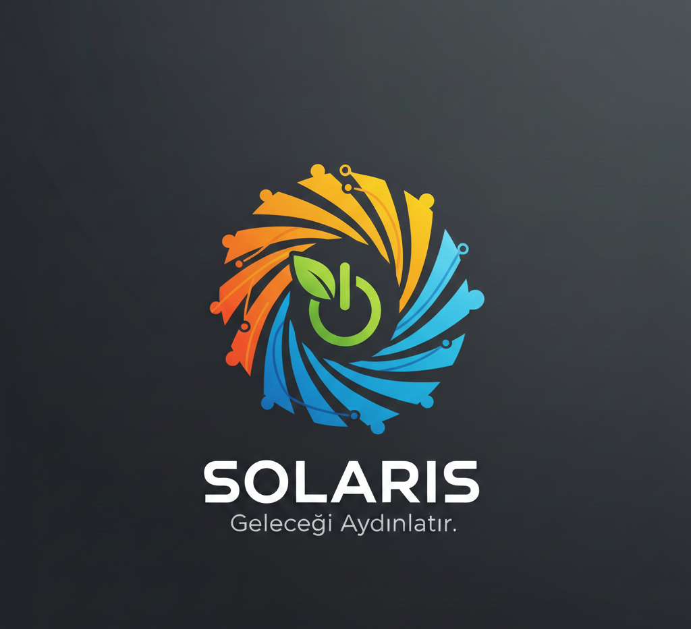

Geleceğin Akıllı Sistemleri
Doğa ile teknolojinin mükemmel uyumu. Kendi enerjisini üreten şehirler için ilk adımı atıyoruz.
Markanın Hikayesi
Her şey bir hayalle başladı: "Teknoloji neden doğaya yük olsun?" Bu soru markayı güneşten ve hareketten güç alan ürünler tasarlamaya itti.
Markanın Amacı
Markanın Hedefi, şehir hayatındaki her nesneyi birer temiz enerji kaynağına dönüştürmek ve karbon ayak izini tamamen silmek.
Markanın Vizyonu
2030 yılına kadar, enerjisini dışarıdan almayan, tamamen kendi kendine yeten "Yeşil Şehir" protokollerini hayata geçirmek.

Markanın İlk Ürünü: Solaris-Go
Dış yüzeyi esnek güneş panelleriyle kaplı bir sırt çantası. Sen yürürken telefonunu şarj eder, akşamları ise üzerindeki LED şeritler sayesinde bisiklet sürerken fark edilmeni sağlar.